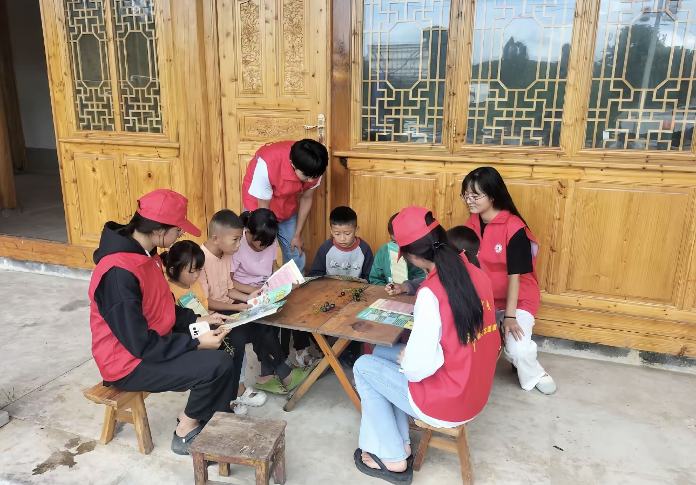
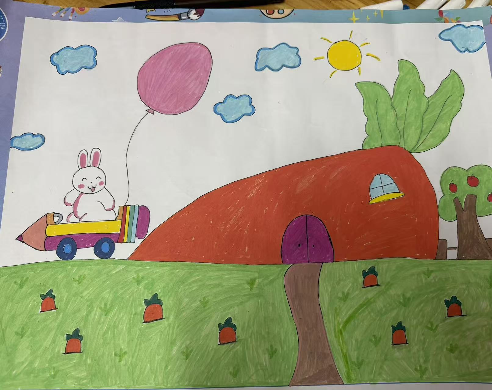
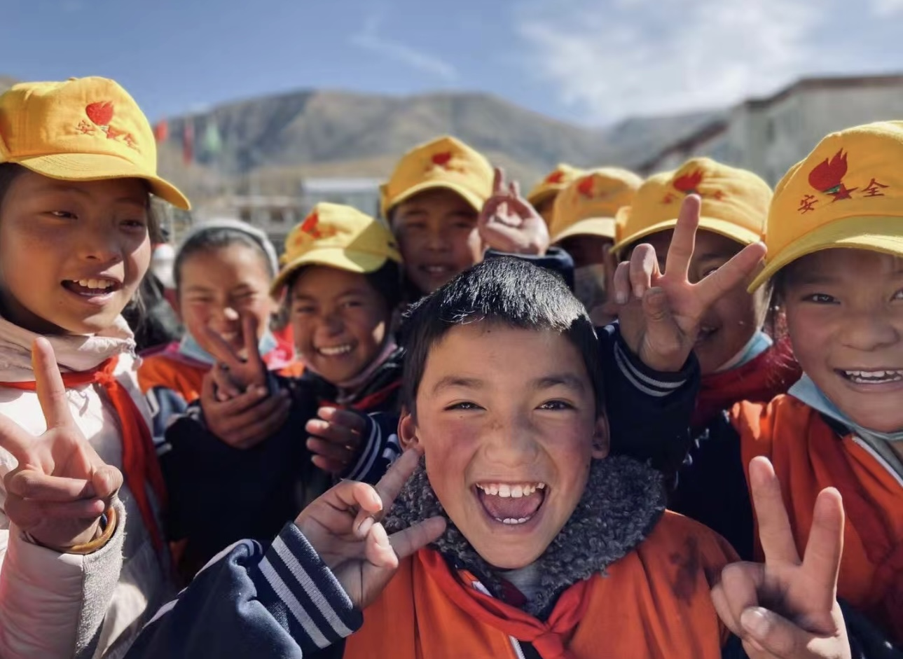

实地调查 & 暖心陪伴

留守儿童故事：小宇的等待
小宇今年8岁，家住云南偏远山区，父母常年在外务工，平日里只有爷爷奶奶陪伴在身边。小小的他早早学会了独立生活，放学回家要帮忙做家务、喂家禽，最大的心愿就是等到春节，能和爸爸妈妈见面。
在志愿走访中我们发现，很多山区留守儿童都和小宇一样，长期缺少父母的情感陪伴，内心敏感内向，渴望被关爱、被倾听。我们长期开展下乡陪伴、课业辅导、心理疏导公益活动，用陪伴填补孩子成长里的空缺。
儿童绘画展示：我心中的温暖小家

小作者：小雅，9岁，云南山区留守儿童
创作时间：2026年春季公益绘画课
画作解读：在我的画里，大大的胡萝卜是温暖的小房子，可爱的小兔子坐着铅笔小车，牵着软软的气球来做客。暖暖的太阳、飘悠悠的云朵，草地上长满了甜甜的小胡萝卜，这里是永远快乐、无忧无虑的童话小家园。
儿童心理科普：留守儿童的情感需求

长期亲子分离的成长环境，容易让留守儿童出现安全感缺失、内向自卑、情感孤独、情绪敏感等心理问题。孩子成长过程中，陪伴、认可、倾听，远比物质给予更加重要。
本专栏持续科普儿童心理健康知识、情绪疏导小方法、亲子沟通技巧，同时面向大众科普留守儿童群体现状，呼吁社会更多善意与关注，守护乡村孩子的心理健康成长。
公益守护行动
我们长期开展山区公益支教、课业帮扶、户外趣味课堂、心理陪伴活动，为乡村留守儿童带去知识、快乐与温暖。后续专栏还会上线趣味益智小游戏、心理小测试、情绪解压小课堂，用轻松的方式陪伴孩子成长。
如果你想了解更多帮扶方式、公益捐赠渠道、志愿报名信息，可以前往「联系我们」栏目查看详情。